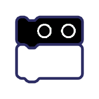

Tofy izeneko talde batek Team OF Year esan nahi du eta robo-almi lehiaketan parte hartuko duten 5 kidek osatzen dute
5 kideak
- Aritz Zapatero -->
- Iker Manso -->
- Aimar Ruiz -->
- Unai Sarria -->
- Jonathan de Miguel -->

Tofyk parte hartzen duen lehiaketa hiru zatitan bananduko da
- Roboten borroka
Robot borroka estadio bat izango da, aurkariak etzanaraziko dituena, eta hori guztia mugikorrarekin kontrolatuko du
- Robot zirkuitua
Zirkuitu robota honetan datza: BQ robotak BQren jarraipen automatizatua egitea libratu beharreko hainbat oztopo dituen zirkuitu batean
- Jarraitu Lineak
BQ robotak zinta beltzez egindako zirkuitu bat jarraitu eta bidetik ez irtetean datza